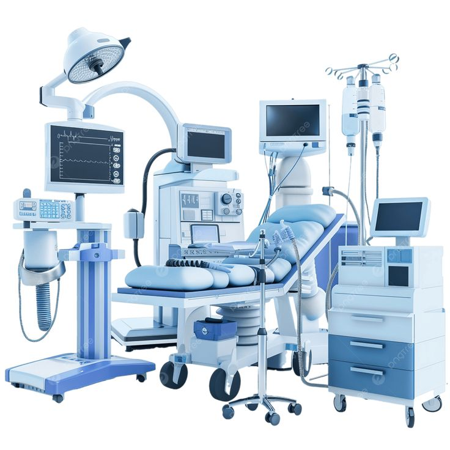
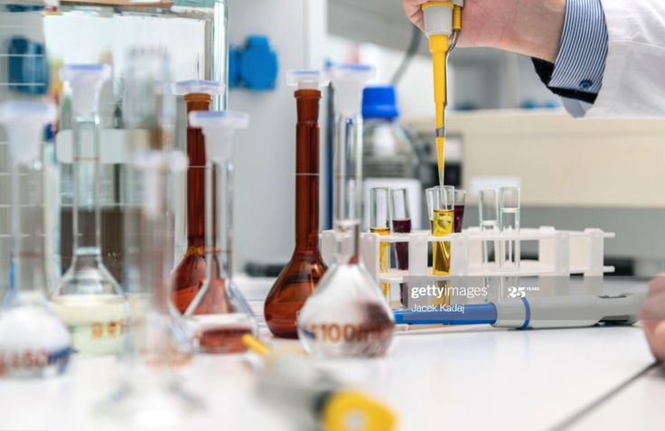
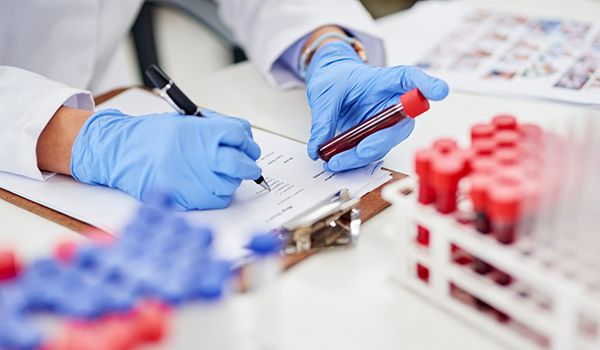

Laboratorium Modern & Canggih
Diagnosis Akurat, Cepat, dan Higienis Didukung Teknologi Medis Terkini

Peralatan & Teknologi Medis Terkini
Laboratorium Klinik Medika Ceria dilengkapi dengan alat analisis otomatis (*Hematology & Clinical Chemistry Analyzer*) berstandar internasional untuk meminimalkan *human error* dan menjamin akurasi hasil tes.
- Pemeriksaan Hematologi Otomatis: Analisis sel darah lengkap hanya dalam hitungan menit.
- Alat Imunologi & Kimia Klinik Canggih: Deteksi kadar gula darah, kolesterol, fungsi hati, serta ginjal secara presisi.
- Sistem Sterilisasi UV & HEPA Filter: Menjaga ruang sampel tetap higienis dan bebas kontaminasi.

Layanan Pemeriksaan Lengkap
Kami melayani berbagai jenis tes laboratorium untuk kebutuhan pemeriksaan rutin maupun rujukan dokter:
- Tes Darah Lengkap: Hemoglobin, Leukosit, Trombosit, LED, dan Profil Anemia.
- Profil Metabolik & Lemak: Kolesterol Total, HDL, LDL, Trigliserida, & Asam Urat.
- Pemeriksaan Diabetes: Gula Darah Puasa, Sewaktu, & Tes HbA1c.
- Tes Urin & Feses Lengkap: Deteksi infeksi saluran kemih dan pencernaan.
- Paket Medical Check-Up (MCU): Skrining kesehatan berkala untuk individu maupun karyawan.

Hasil Cepat & Serba Digital
Proses pengambilan darah dilakukan oleh Tenaga Analis Kesehatan (Flebotomis) yang berpengalaman dan ramah sehingga minim rasa sakit.
- Hasil Cepat (Sameday Service): Hasil pemeriksaan umum dapat selesai pada hari yang sama.
- Laporan Digital via WhatsApp / PDF: Hasil lab dikirimkan langsung ke ponsel Anda tanpa perlu datang mengambil kertas fisik.
- Privasi Data Terjamin: Seluruh rekam medis dan hasil laboratorium disimpan dalam sistem komputer terenkripsi.